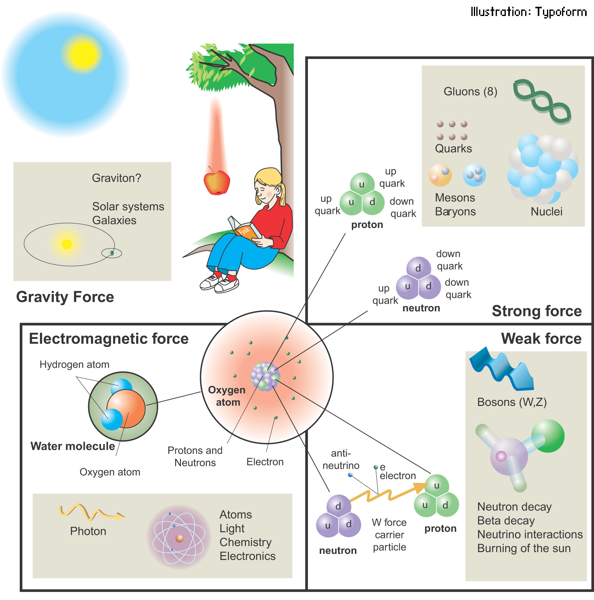
\[F_t = m \cdot g\]
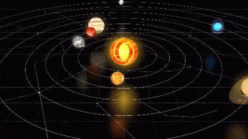
\[F_G = G \cdot \frac{M \cdot m}{r^2}\]
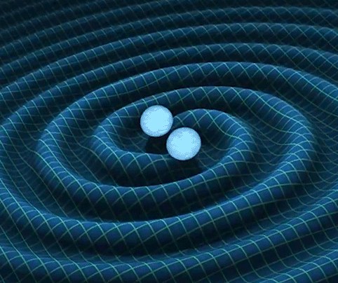
\[R_{\mu \nu} - \frac{1}{2}R g_{\mu \nu} + \Lambda g_{\mu \nu} = \kappa T_{\mu \nu}\]
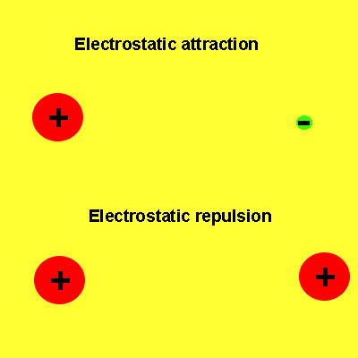
\[F_C = k \cdot \frac{q_1 \cdot q_2}{r^2}\]
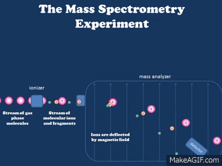
\[\vec{F} =q \cdot \vec{v} \times \vec{B}\]
Står for radioaktive henfald.
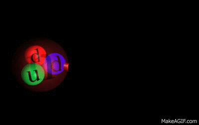
\(\beta^-\) henfald
\[n \to p + W^- \to p + e^- + \bar{\nu}_e\]
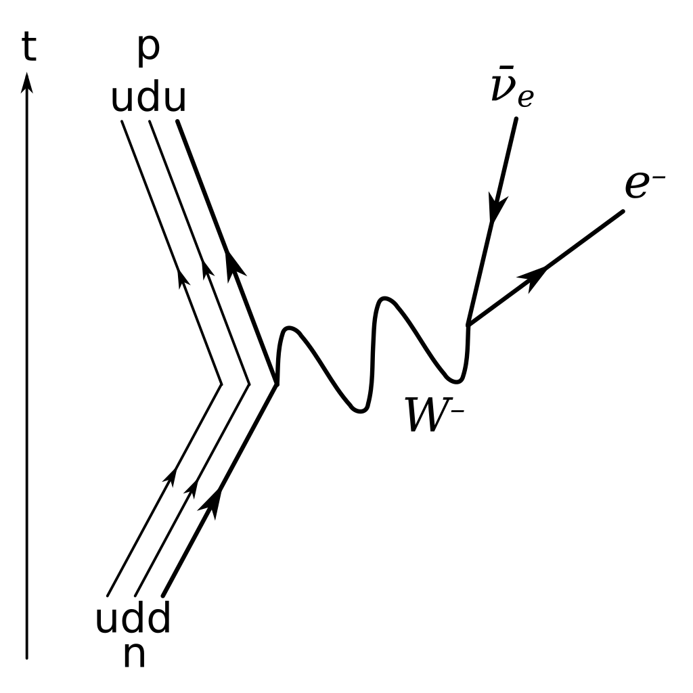
"Klistre" kvarker sammen til nukleoner (protoner og neutroner) og klistre nukleoner sammen til nuklider(atomkerner).
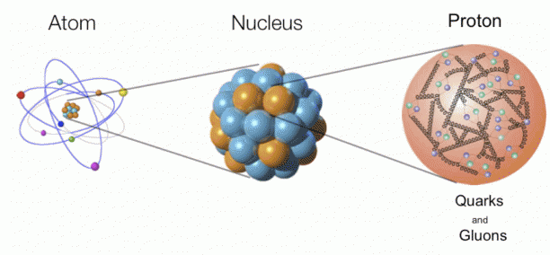
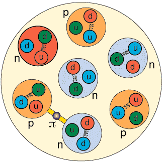
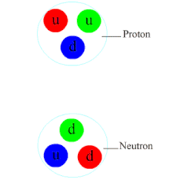
\[{}_Z^A X \quad \text{og} \quad A=Z+N\]
Eksempler
\[{}_{92}^{235}U \quad {}_{94}^{239}Pu \quad {}_2^4He \quad {}_{1}^1H \]
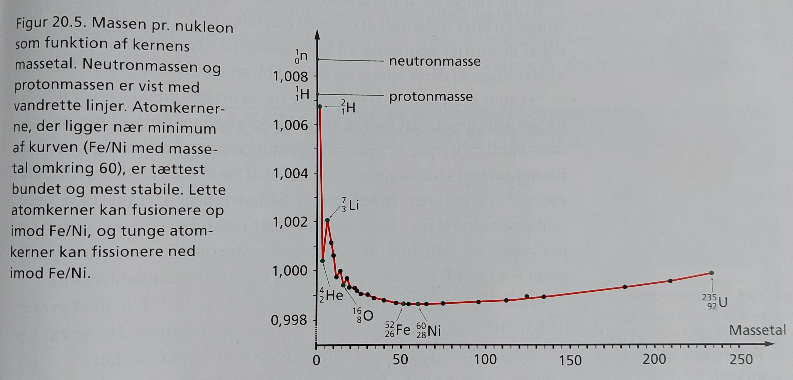
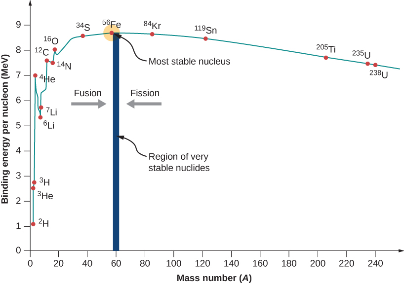
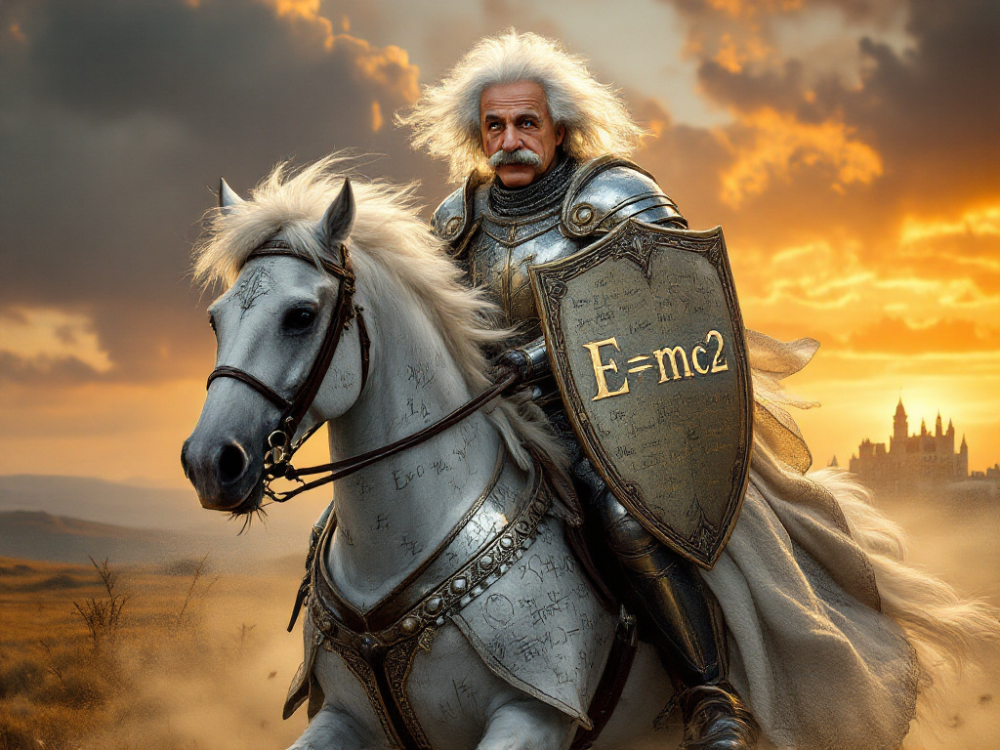
\[\boxed{E_\text{binding} = m_\text{defekt}\cdot c^2}\]
\[m_\text{defekt} = Z \cdot m_p + N \cdot m_n + Z \cdot m_e - m_\text{atom}\] eller \[m_\text{defekt} = Z \cdot m_p + N \cdot m_n - m_\text{kerne}\]
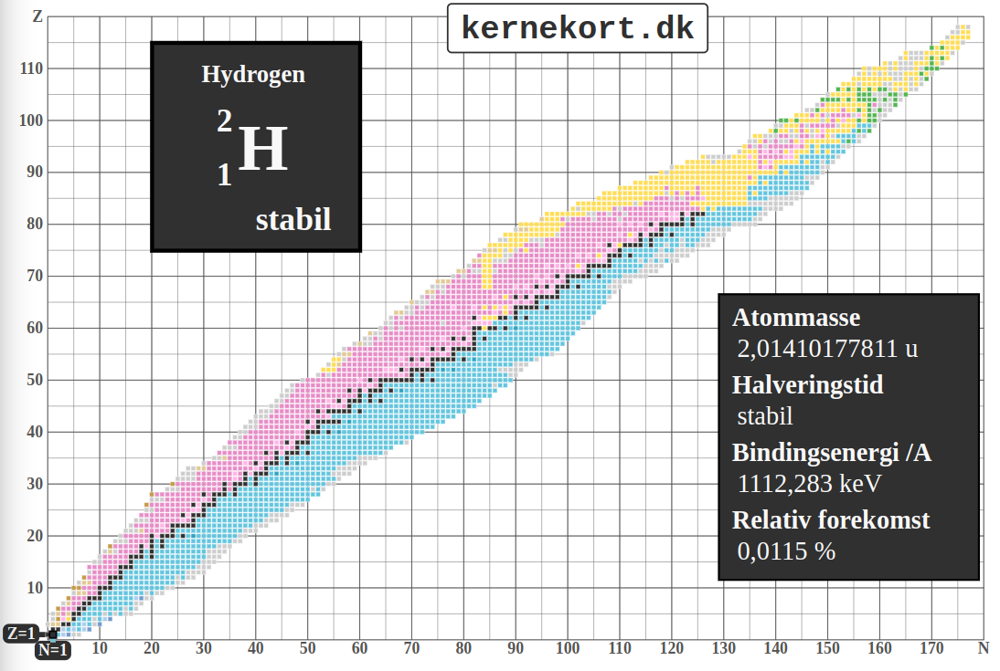
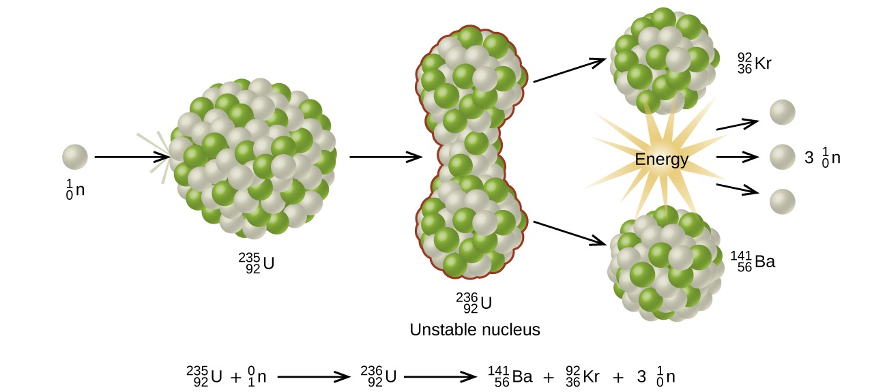
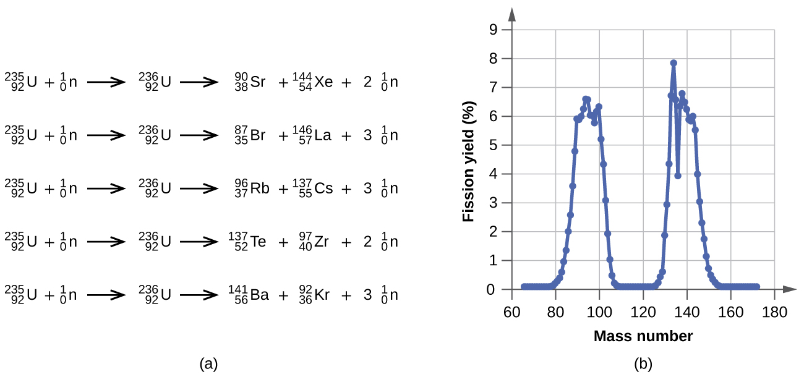
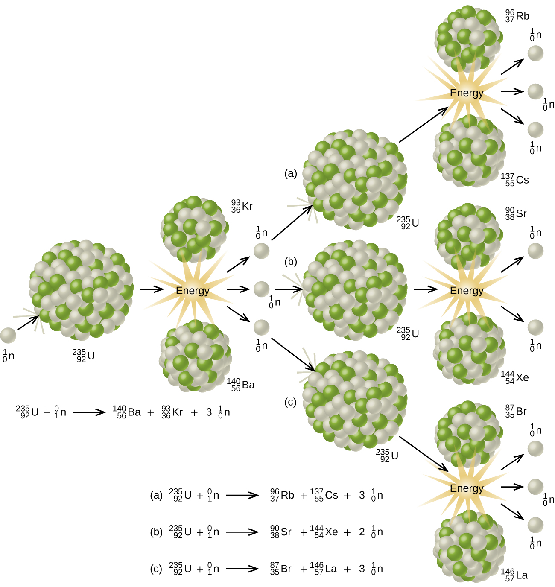
\[\boxed{Q = - \Delta m \cdot c^2\,,}\]
hvor \(\Delta m = m_\text{efter}-m_\text{før}\)
Jeg tager den første reaktion \[{}_{92}^{235}U + {}_1^0n \to {}_{92}^{236} U \to {}_{56}^{140} Ba + {}_{36}^{93} Kr + 3 \, {}_1^0 n\]
En gennemsnitsdansker bruger 117 GJ per år og har en forventet levetid på 81.8 år.
Et kernekraftværk benytter typisk beriget uran, hvor 3% er U-235 og 97% er U-238.
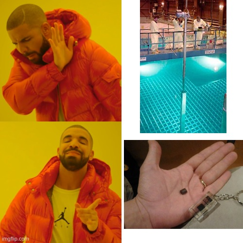
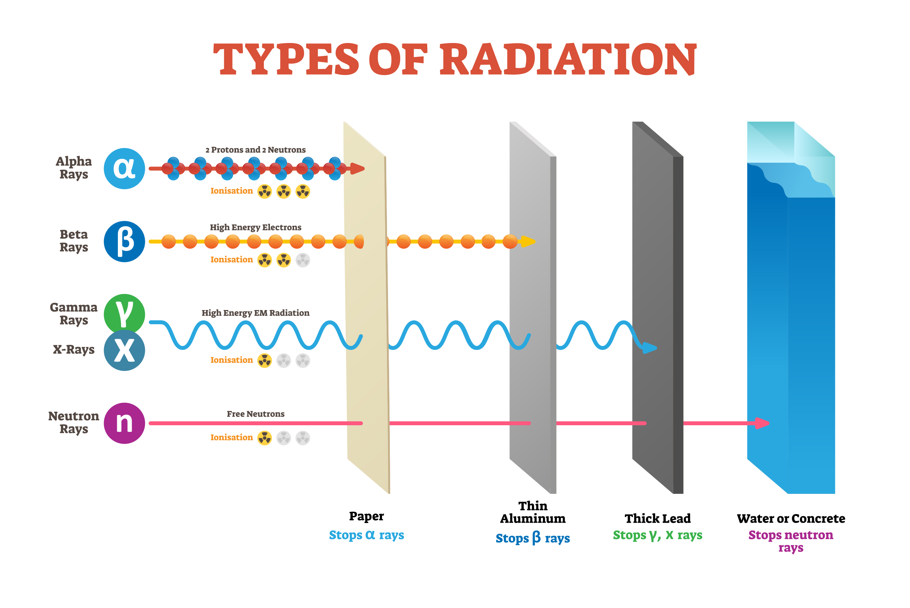